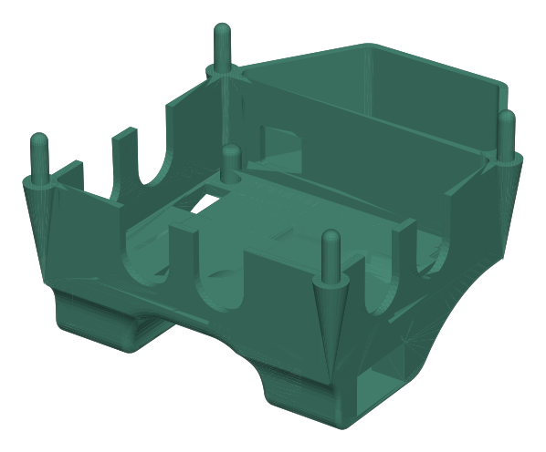
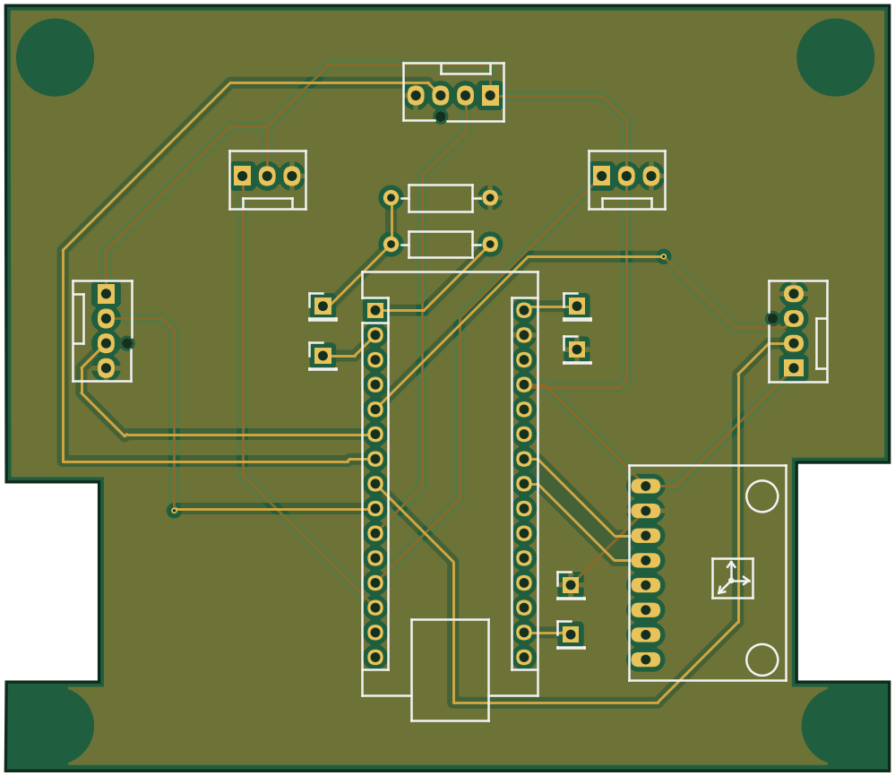

Autonomous Robotic Fleet
Independent project · In progress
A fleet of small autonomous cars built from scratch (electronics, PCB, chassis, and firmware), working toward leader–follower behavior learned with multi-agent reinforcement learning.
- Sensing and control: an Arduino Nano drives two continuous-rotation servo wheels, reacts to obstacles using three HC-SR04 ultrasonic sensors (front, left, right), and tracks heading by integrating the bias-corrected gyro of an MPU-6050 IMU over I²C
- Vision board: a MAX78000 (Maxim's microcontroller with a CNN accelerator and camera interface) sends commands to the Arduino over UART, the groundwork for camera-based control on the car
- Custom PCB: a two-layer KiCad board that carries the Nano, the IMU, three sensor headers, two servo headers, and a ground pour, prototyped first on a breadboard
- Mechanical: chassis, caster, camera mount, and wheels designed in Fusion 360 and iterated through 3D prints until everything fit
- Next: exporting the URDF into Python to simulate the fleet for RL training (PyBullet, PyTorch)


Obstacle avoidance with three ultrasonic sensors gyro_practice.ino
// Three HC-SR04 sonars: front (N), left (W), right (E); max range 50 cm
static NewPing sonar[SONAR_NUM] = {
NewPing(TRIGGER_PIN_N, ECHO_PIN_N, MAX_DISTANCE),
NewPing(TRIGGER_PIN_W, ECHO_PIN_W, MAX_DISTANCE),
NewPing(TRIGGER_PIN_E, ECHO_PIN_E, MAX_DISTANCE)
};
int sonar_N = sonar[0].ping_cm();
int sonar_W = sonar[1].ping_cm();
int sonar_E = sonar[2].ping_cm();
// React to anything closer than 20 cm (0 means no echo)
if (sonar_N < 20 && sonar_N > 0) {
rightWheel.write(0);
leftWheel.write(180);
}
else if (sonar_W < 20 && sonar_W > 0) {
leftWheel.write(180);
rightWheel.write(90);
}
else if (sonar_E < 20 && sonar_E > 0) {
leftWheel.write(90);
rightWheel.write(0);
}
else {
rightWheel.write(90); // 90 = stop for continuous-rotation servos
leftWheel.write(90);
}Heading from the MPU-6050 gyro gyro_practice.ino
// Read the three gyro axes over I2C (6 bytes starting at GYRO_XOUT_H)
Wire.beginTransmission(MPU);
Wire.write(0x43);
Wire.endTransmission(false);
Wire.requestFrom(MPU, 6, true);
GyroX = (Wire.read() << 8 | Wire.read()) / 131.0; // ±250 °/s range → °/s
GyroY = (Wire.read() << 8 | Wire.read()) / 131.0;
GyroZ = (Wire.read() << 8 | Wire.read()) / 131.0;
// Correct with calibrated bias, then integrate the z-rate into yaw
GyroZ = GyroZ + 1.51;
yaw = yaw + GyroZ * elapsedTime;MAX78000 → Arduino commands over UART MAX_practice/src/main.c
MXC_UART_Init(MXC_UART2, 115200, MXC_UART_APB_CLK);
MXC_UART_SetDataSize(MXC_UART2, 8);
MXC_UART_SetParity(MXC_UART2, MXC_UART_PARITY_DISABLE);
MXC_UART_SetStopBits(MXC_UART2, MXC_UART_STOP_1);
while (1) {
if (val) {
LED_On(LED);
const char* msg = "1\n"; // newline-terminated command
len = strlen(msg);
MXC_UART_Write(MXC_UART2, (uint8_t*)msg, &len);
}
else {
LED_Off(LED);
const char* msg = "0\n";
len = strlen(msg);
MXC_UART_Write(MXC_UART2, (uint8_t*)msg, &len);
}
val = !val;
MXC_Delay(1000000); // ~1 second delay
}